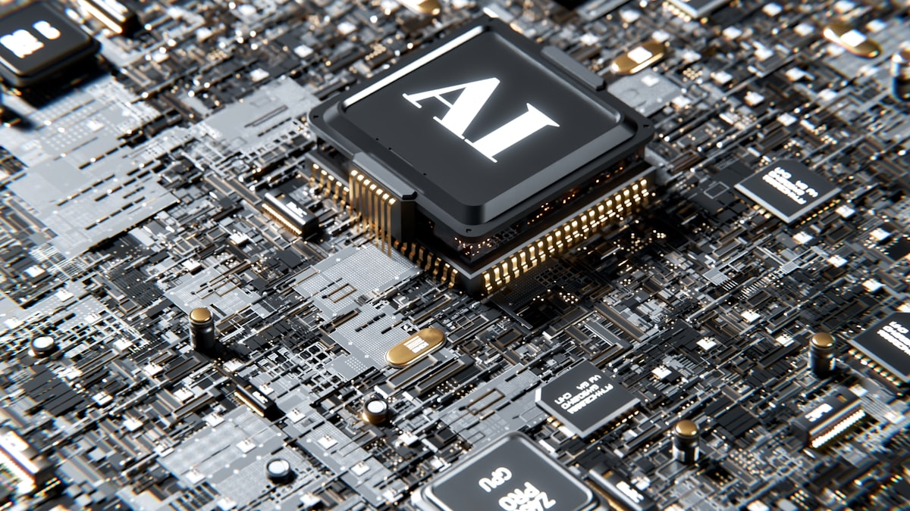

Difüzyon Modelleri ve Görüntü Üretimi: Gürültüden Görüntüye

Bir fotoğrafa kar tanesi gibi tek tek piksel gürültüsü serpiştirdiğinizi düşünün; yeterince serpince geriye yalnızca bulanık bir parazit kalır. Difüzyon modelleri tam da bu süreci tersine çevirmeyi öğrenir: saf gürültüden başlayıp, adım adım temizleyerek anlamlı bir görüntü inşa eder. Bu yazıda gürültüden görüntüye giden yolu, ileri ve geri süreçleri ve Stable Diffusion'ın neden "latent" alanda çalıştığını günlük analojilerle, abartısız ve doğru biçimde anlatıyoruz.
İçindekiler
1. Difüzyon nedir? Sezgisel bakış
Difüzyon modeli, görüntü üretmeyi iki yönlü bir süreç olarak kurar. Bir tarafta, net bir görüntüyü yavaş yavaş gürültüye dönüştüren bir "bozma" süreci vardır. Diğer tarafta, modelin asıl öğrendiği şey: bu bozulmayı geri alma, yani gürültüyü temizleme becerisi.
Analoji şöyle: Bir cam bardağı yere düşürüp kırarsanız, kırılma sürecini tarif etmek kolaydır — fizik bunu kendiliğinden yapar. Zor olan, kırıkları geri birleştirip bardağı oluşturmaktır. Difüzyon modeli, bozulma sürecini bilerek tasarladığımız için, modelin yalnızca geri birleştirmeyi öğrenmesi yeterlidir. Üstelik bu birleştirmeyi tek hamlede değil, küçük adımlarla yapar; her adımda biraz daha temiz bir tahmin üretir.
Difüzyonun gücü, zor problemi (bir anda görüntü üretmek) çok sayıda kolay alt probleme (azıcık gürültü temizlemek) bölmesinden gelir.
2. İleri süreç: görüntüye gürültü eklemek
İleri süreç (forward process), eğitim verisindeki bir görüntüye T adım boyunca kademeli olarak Gauss gürültüsü ekler. Başlangıçta görüntü nettir; her adımda biraz daha bozulur ve yeterince adım sonra neredeyse saf rastgele gürültüye dönüşür. Önemli olan nokta: bu süreçte öğrenilen bir parametre yoktur. Tamamen önceden belirlenmiş bir "gürültü takvimine" (noise schedule) göre işler.
Pratik bir kolaylık şudur: matematiksel olarak, herhangi bir t adımındaki gürültülü görüntüyü tek seferde hesaplayabilirsiniz; T adımı tek tek dolaşmaya gerek yoktur. Bu, eğitimi büyük ölçüde hızlandırır.
3. Geri süreç: gürültüden görüntü çıkarmak
Asıl sihir geri süreçte (reverse process) gerçekleşir. Model, gürültülü bir görüntü ve hangi adımda olduğumuz bilgisi verildiğinde, eklenmiş olan gürültüyü tahmin etmeyi öğrenir. Eğitim hedefi şaşırtıcı derecede sadedir: "Bu görüntüye ne kadar gürültü ekledim?" sorusunun cevabını bilen ağ, o gürültüyü çıkararak bir adım daha temiz görüntüye geçebilir.
Üretim (sampling) sırasında ise elimizde gerçek bir görüntü yoktur; saf gürültüyle başlarız. Model her adımda gürültüyü tahmin eder, bir miktar geri çıkarır, ve bu döngü tekrar eder. Adım sayısı azaldıkça hız artar ama kalite düşebilir; bu, pratikteki temel ödünleşmedir.
# Geri süreç (sampling) — sözde kod
x = rastgele_gurultu(boyut) # saf gürültüden başla
for t in [T, T-1, ..., 1]:
gurultu_tahmini = model(x, t) # bu adımdaki gürültüyü tahmin et
x = bir_adim_temizle(x, gurultu_tahmini, t)
return x # üretilmiş görüntü
Eğitim tarafı da simetrik olarak basittir: bir görüntü al, rastgele bir t adımı seç, bilinen miktarda gürültü ekle, modelden o gürültüyü tahmin etmesini iste ve tahmin ile gerçek gürültü arasındaki farkı küçült.
# Eğitim — sözde kod
goruntu = veri_kumesinden_ornek()
t = rastgele_adim(1, T)
gurultu = gauss_gurultusu()
gurultulu = goruntuye_ekle(goruntu, gurultu, t)
kayip = fark(model(gurultulu, t), gurultu) # MSE
kayip.geri_yayilim()
4. Latent diffusion ve Stable Diffusion
Yukarıdaki süreci doğrudan piksellerde çalıştırmak pahalıdır. Örneğin 512×512 renkli bir görüntü yüz binlerce sayıdan oluşur ve her üretim adımında bu devasa alanda işlem yapmak yavaştır. Stable Diffusion'ın temelindeki latent diffusion fikri burada devreye girer.
Fikir şu: Önce bir otokodlayıcı (autoencoder) eğitilir. Bu ağın kodlayıcı kısmı görüntüyü çok daha küçük, sıkıştırılmış bir temsile ("latent") indirger; çözücü kısmı ise bu temsilden görüntüyü geri kurar. Difüzyon süreci artık ham piksellerde değil, bu küçük latent alanda çalışır. Üretim bittikten sonra çözücü, latent'i tekrar tam çözünürlüklü görüntüye dönüştürür.
Analoji: Bir romanı kelimesi kelimesine kopyalamak yerine, önce ayrıntılı bir özetini çıkarırsınız. Yaratıcı çalışmayı (kurguyu değiştirmeyi) özet üzerinde yaparsınız çünkü orada gezinmek çok daha hızlıdır; iş bitince özetten tam metni yeniden yazarsınız. Latent alan, görüntünün bu "anlamlı özeti" gibidir.
5. Metinden görüntüye: koşullandırma
"Gün batımında bir deniz feneri" yazıp görüntü almak, koşullandırma (conditioning) sayesinde olur. Metin, bir metin kodlayıcı tarafından sayısal bir temsile çevrilir ve bu temsil, geri süreçteki gürültü tahmin ağına yönlendirici bir sinyal olarak verilir. Böylece model gürültüyü temizlerken yalnızca "herhangi bir görüntü" değil, metne uyan bir görüntü üretmeye yönlendirilir.
Pratikte üretimin metne ne kadar sıkı bağlı olacağını ayarlamak için bir rehberlik (guidance) mekanizması kullanılır. Yüksek rehberlik, görüntüyü metne daha sadık ama bazen daha az doğal kılar; düşük rehberlik daha serbest ama metinden uzaklaşabilen sonuçlar verir. Bu denge, kullanıcı için en pratik ayar düğmelerinden biridir.
6. Sınırlar ve pratik notlar
- Hız: Çok adımlı üretim doğası gereği yavaştır. Daha az adımla iyi sonuç veren örnekleme yöntemleri bu sorunu hafifletir.
- Tutarlılık: Eller, küçük yazılar ve sayım gerektiren ayrıntılar hâlâ zorlayıcı olabilir.
- Veri ve telif: Modelin ürettikleri, eğitim verisinin dağılımını yansıtır; içerik kullanımında telif ve etik sorumluluk önemlidir.
- Tekrarlanabilirlik: Aynı tohum (seed) ve ayarlarla aynı görüntü üretilebilir; bu, deneme ve hata ayıklama için değerlidir.
Difüzyon yaklaşımının yapay zekâ uygulamalarına nasıl entegre edildiğini merak ediyorsanız, EcoFluxion sayfasındaki çalışma yaklaşımımıza göz atabilirsiniz.
Öne çıkanlar
- Difüzyon, zor üretim problemini çok sayıda kolay "gürültü temizleme" adımına böler.
- İleri süreç öğrenilmez; sabit bir takvimle gürültü ekler. Model yalnızca geri süreci öğrenir.
- Latent diffusion, işlemleri sıkıştırılmış bir alana taşıyarak hızı ciddi biçimde artırır.
- Metinden görüntüye üretim, koşullandırma ve rehberlik mekanizmalarıyla mümkün olur.
Difüzyon modeli ile GAN arasındaki temel fark nedir?
GAN'lar görüntüyü genellikle tek geçişte üretir ve eğitimi kararsız olabilir. Difüzyon modelleri ise çok adımlı, kademeli bir temizleme süreci kullanır; eğitimi daha kararlıdır ve çeşitlilik bakımından genelde güçlüdür, ancak üretim daha yavaş olabilir.
Neden doğrudan piksel yerine latent alanda çalışılıyor?
Ham pikseller çok yüksek boyutludur ve her üretim adımı pahalıdır. Sıkıştırılmış latent alan, anlamlı bilgiyi büyük ölçüde koruyarak hesaplama yükünü azaltır; böylece üretim hızlanır ve daha erişilebilir donanımda çalışır.
Adım sayısını azaltmak görüntüyü bozar mı?
Genellikle az adım hızı artırır ama kaliteyi düşürebilir. Modern örnekleme yöntemleri, görece az adımla iyi sonuçlar verecek şekilde tasarlanmıştır; doğru yöntem ve ayarla hız ile kalite arasında makul bir denge kurulabilir.
Özetle difüzyon modelleri, basit bir fikrin — bozulmayı geri almayı öğrenmenin — dikkatli mühendislikle güçlü bir görüntü üreticiye dönüşmesidir. Latent alan bu gücü pratiğe taşır.